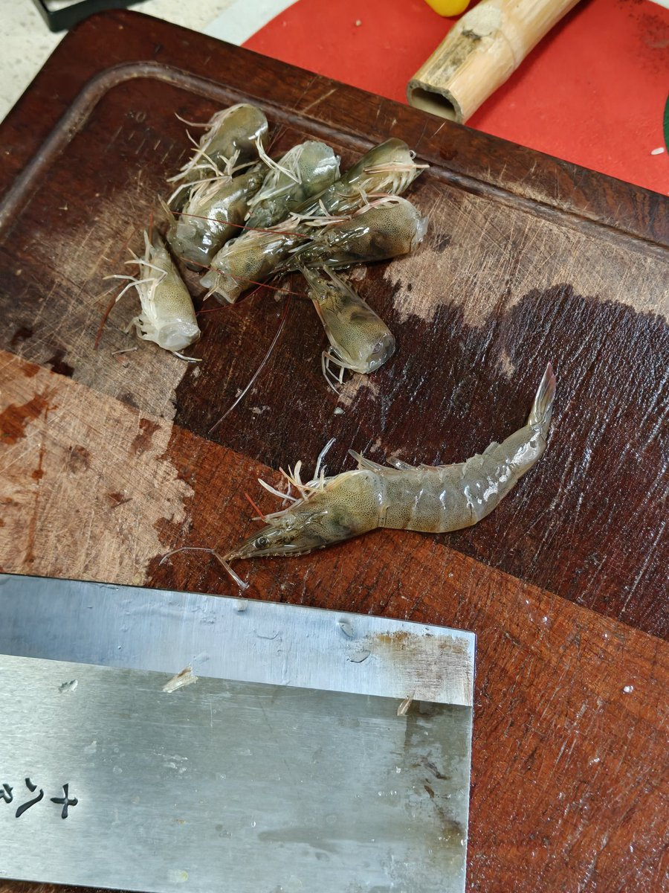

MistAvi🍥
@NyaMist5
@hdyp5ifty6ixxxx @ShiomiReiki 共情的是一个生命痛苦的消失，这是人为什么是感情动物的根本所在，和吃不吃肉没有关联

5fti6ks_fz
@hdyp5ifty6ixxxx
@ShiomiReiki 这么善良有本事别吃红烧肉😂 早上处理的 这些东西仅仅是食材罢了 不用他妈的去怜悯 有一只虾要被砍头的时候他还抽了一下，我被吓了一跳 然后砍的更狠了 https://t.co/erbOwbNAyF